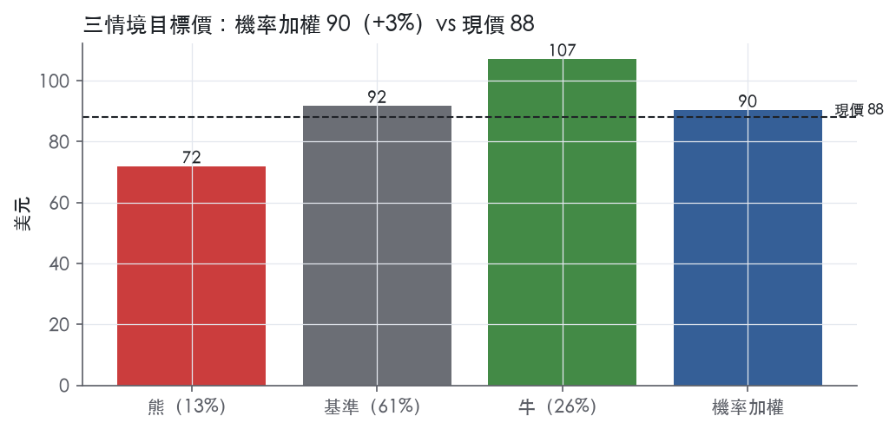
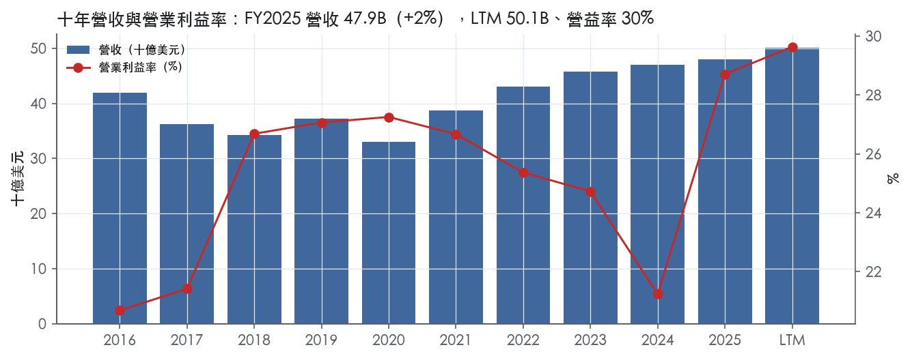
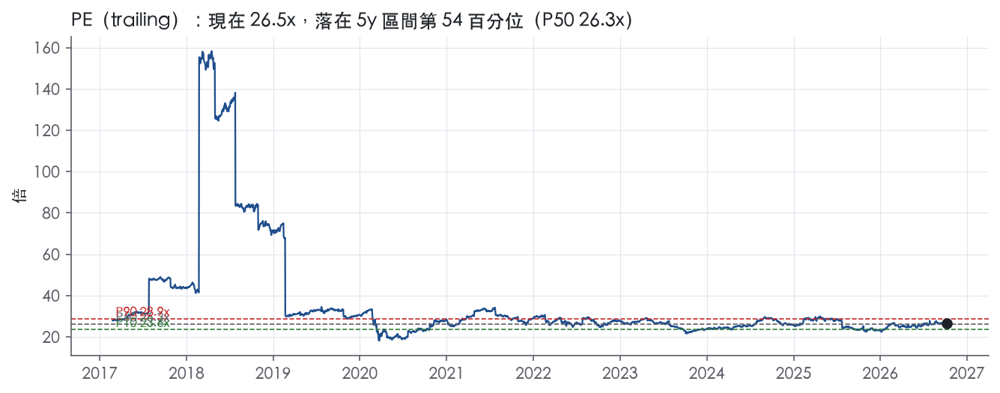
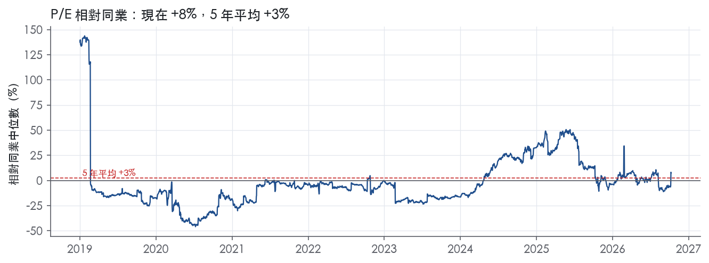
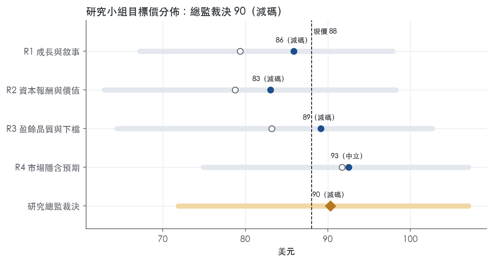
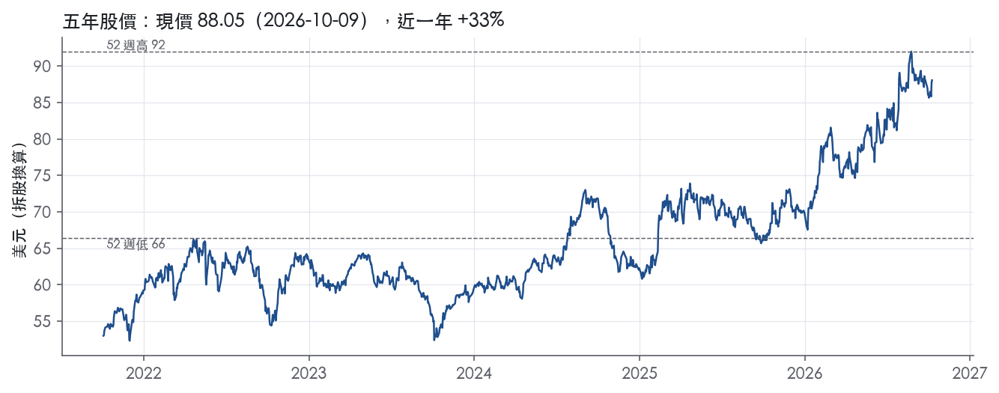

評等總表 › 必需消費 › KO
盈餘上修、倍數持平，優質但已滿價，中性｜評等 減碼｜目標價 90
| 報告日 | 評等 | 目標價 | 當時股價 | 超額報酬 |
|---|---|---|---|---|
| 2026-10-09 | 減碼 | 90.30 | 88.05 | -5.3% |
| 評等 | 減碼（邊界，鄰近中立） |
| 12 個月目標價 | 90 美元 |
| 現價 | 88.05 美元（2026-10-09） |
| 預期報酬 | 股價 +2.6%＋股息 2.4%＝總報酬 +4.9%；同業籃門檻 10.2%，超額 -5.3% |
| 估值方法 | P/E 25.6x，套在第 5–8 季的EPS（也就是一年後的未來四季） |
| 三情境 | 熊 72／基準 92／牛 107 |
| 研究流程 | 四位研究員兩輪辯論＋研究總監裁決 |
| 資料來源 | SEC EDGAR XBRL、Tiingo、FRED（全免費） |
盈餘上修、倍數持平，優質但已滿價，中性（研究總監裁決，四位研究員兩輪辯論後）
評等 減碼（邊界，鄰近中立）｜12 個月目標價 90 美元（總監三情境機率加權 93 與研究員中位數 88 各半）｜現價 88.05（2026-10-09）
預期報酬：股價 +2.6%＋股息 2.4%＝總報酬 +4.9%。同業籃門檻 10.2%，超額 -5.3%，離中立的分界不到三個百分點，屬邊界評等（落在其他級距的機率約五成）。
估值方法：P/E 25.6x，套在第 5–8 季的EPS（也就是一年後的未來四季）。三情境：熊 72（13%）／基準 92（61%）／牛 107（26%）。
立場中性而評等減碼：評等看的是「預期總報酬 4.9% − 同業籃門檻 10.2%」＝超額 -5.3%，不是絕對漲跌；中性但超額偏離門檻，代表情境機率或股利把報酬推離門檻。
什麼會讓研究總監改變看法：FY2026Q3 營益率 ≥35% 且箱量年增轉正，核心上修至 33%、倍數移向前瞻帶 P90 27.8x 轉多；FY2026 淨利／營業利益 <0.85x 或 Q3 營益率 <32%，加回降至 4pp、倍數退到 P50 24.3x 轉空。
| 過去四季（實際，FY2026Q2） | 未來四季 | 第 5–8 季 | 第 9–12 季 | |
|---|---|---|---|---|
| 營收（B） | 50.1B | 52.4B | 55.0B | 57.8B |
| 營收成長 | 6.5% | 4.5% | 5.0% | 5.0% |
| 營業利益率 | 29.6% | 36.5% | 37.0% | 37.0% |
| EPS（美元） | 3.33 | 3.34 | 3.58 | 3.78 |
| EPS 成長 | 18.0% | 0.5% | 7.1% | 5.5% |
| 每股股息（美元） | 2.08 | 2.08 | 2.08 | 2.08 |
| P/E（現價） | 26.5x | 26.3x | 24.6x | 23.3x |
| 股息殖利率（現價） | 2.4% | 2.4% | 2.4% | 2.4% |
過去四季為申報數字；預測為研究總監的假設、程式計算。倍數與殖利率都用現價計算，用來看現價對應各期獲利的高低。
| 情境 | 機率（歷史） | 故事 | 未來四季營收成長 | 第 5–8 季營益率 | 倍數 | 目標價 | 股價漲跌 |
|---|---|---|---|---|---|---|---|
| 熊 | 13%（10%） | 風險表第 2 條（通膨下提價致箱量下滑）與第 3 條（自有品牌分流）：核心營益率回到 30% 附近、Q4 費用再現，倍數依第 1 條（估值與利潤率回歸）回到前瞻帶 P10–P25 | 3.5% | 35.0% | 22.0x | 72 | -18.4% |
| 基準 | 61%（65%） | 核心營益率 31.5–32% 含 Q4 費用，加回 5pp，箱量持平下價格驅動 5% 成長，倍數同口徑持平 | 4.5% | 37.0% | 25.6x | 92 | 4.1% |
| 牛 | 26%（25%） | 提價不傷量、箱量轉正，上半年 35% 利潤率延續全年且 Q4 無大額費用，市場付接近 10y P50 的倍數 | 6.5% | 38.5% | 27.5x | 107 | 21.6% |
目標價由程式依研究總監的驅動與倍數計算；機率由研究總監給定。括號內是歷史頻率：把這檔股票過去十年 12 個月報酬的波動形狀，置中在基準情境，結果落在各情境附近的比例。

四位研究員用不同方法各自估值，回應研究總監的質疑後交出第二輪，最後由總監逐點裁決。各研究員的主張見第七章，裁決理由見第八章，完整論證見《研究底稿》。
| 立場（一輪→二輪） | 加權目標價（一輪→二輪） | 評等（一輪→二輪） | 第二輪倍數 | 熊～牛目標價 | |
|---|---|---|---|---|---|
| R1 成長與敘事 | 看空→看空 | 79→86 | 賣出→減碼 | 26.0x | 67～98 |
| R2 資本報酬與價值 | 看空→看空 | 79→83 | 賣出→減碼 | 24.5x | 63～98 |
| R3 盈餘品質與下檔 | 中性→中性 | 83→89 | 減碼→減碼 | 25.6x | 64～103 |
| R4 市場隱含預期 | 看空→中性 | 92→93 | 中立→中立 | 25.0x | 75～107 |
| 研究總監裁決 | 中性 | 90 | 減碼 | 25.6x | 72～107 |
目標價由程式依各自的驅動與倍數計算；評等＝機率加權總報酬 − 同業籃門檻。
Coca-Cola 是一家全球飲料公司，核心商業模式是把濃縮液與糖漿賣給獨立裝瓶夥伴，再由裝瓶系統製造、配送到零售與餐飲通路給終端消費者。公司在美國設有一家完全自有的防火牆子公司，透過第三方製造與配送商生產、配送並銷售酒精飲料，同時授權持有酒類執照的第三方在以公司飲料基底製成的酒類產品上使用公司商標¹。2025 年公司自美國以外地區創造了 28.8B 美元的淨營業收入¹。公司生意高度依賴裝瓶夥伴的財務健康與配合度，部分裝瓶夥伴為上市公司，其決策未必與 Coca-Cola 的利益一致¹。截至 FY2025，公司 LTM 營收規模落在 47.94B 美元，是一家成熟、現金流穩定但成長相對緩慢的消費品牌公司。
10-K 原文未在本節提供逐分部營收占比的具體數字，僅揭露「一家裝瓶夥伴占 2025 年淨營業收入的 10%，反映在 EMEA 與亞太營運分部」¹，顯示公司以地理營運分部（而非產品線）作為主要報告架構。公司持續評估併購機會以擴充其飲料組合與能力，並一直以來會收購或取得裝瓶營運的控制權，通常是在表現不佳的市場中運用自身資源與專業來改善績效¹。公司也透過授權、合資與策略關係參與其他飲料品牌的銷售，其中包含與 Monster 的關係¹。公司作為策略性聚焦核心業務（建立品牌、領導裝瓶夥伴系統）的一部分，持續尋求將自有裝瓶營運再授權（refranchise）的機會¹。分部間的毛利率差異、各地區成長引擎的細項，10-K 本節未揭露。從財務資料包看，FY2025 整體毛利率 61.6%、營益率 28.7%（對應年度表），反映出高毛利的濃縮液銷售模式仍是主要獲利來源。
零售通路正在經歷整併與線上化的雙重衝擊，尤其在歐洲與美國，這直接影響公司的議價與行銷支出結構¹。零售商可能要求更低價格、增加行銷或促銷支出，並更可能利用其配送網路發展自有品牌，這些都可能損及 Coca-Cola 系統的獲利能力¹。在已開發市場，折扣店與平價商店快速成長；在新興與發展中市場，現代通路成長速度超過傳統通路¹。電商、行動應用程式與訂閱服務的快速成長正在把銷售從實體零售轉向數位通路，公司與裝瓶夥伴若無法與既有及新興電商零售商建立並維持良好關係，可能損及與經營實體通路的關鍵客戶之關係¹。公司在新興與發展中市場的成長，取決於當地經濟政治條件，以及與當地裝瓶夥伴合作改善生產設施、配送網路、銷售設備與技術的能力¹。地區層級的具體營收占比，10-K 本節未揭露，須待後續財報分部附註補充。
FY2025Q4（期末 2025-12-31）營收 11.82B 美元、年增 2.4%，但受一次性因素影響，營益率降至 15.6%、EBITDA 僅 2.08B 美元，明顯低於同年其他三季【判，數字取自資料包 FY2025Q4 期列】。FY2026Q1（期末 2026-04-03）營收回升至 12.47B 美元、年增 12.1%，毛利率 63.0%、營益率 35.0%，EBITDA 4.62B 美元，單季 FCF 1.75B 美元【判，數字取自資料包 FY2026Q1 期列】。FY2026Q2（期末 2026-07-03）營收 13.38B 美元、年增 6.7%，毛利率 62.9%、營益率 34.9%，EBITDA 4.94B 美元、淨利 4.42B 美元、EPS 1.03，單季 CFO 5.52B 美元、FCF 5.10B 美元【判，數字取自資料包 FY2026Q2 期列】。截至 LTM@FY2026Q2，公司營收 50.13B 美元、GAAP 稀釋 EPS 3.33、EBITDA 15.89B 美元、FCF 14.30B 美元。整體趨勢是 FY2025Q4 利潤率明顯壓縮後，進入 FY2026 兩季利潤率連續站穩 63% 毛利率、約 35% 營益率的高位，顯示成本端壓力在 FY2026 上半年有所緩解。本次資料包未附上最新一期新聞稿對下一季的具體財測原文，故指引方向無法逐句抄錄。
公司表示其長期成長目標的達成，依賴旗下眾多飲料產品的銷售潛力評估，以及對價格與產品組合的判斷，其中部分產品的獲利能力高於其他產品¹。公司認為提升生產力是達成長期成長目標的關鍵，因此公司的首要任務之一是設計並執行最有效率的商業模式¹。公司持續以創新活動作為成長引擎，包括正確預判消費者偏好與趨勢、取得並維護必要的智慧財產權¹。公司將數位化整個 Coca-Cola 系統列為最優先事項之一，透過在消費者互動的各個接觸點創造更個人化的體驗、為零售客戶打造更強大的數位工具，以及運用數據、人工智慧、自動化與機器人來提升效率與生產力¹。公司也直接進入多個美國以外市場的酒精飲料品類，並在美國透過防火牆子公司間接涉足此品類，視其為擴充飲料組合的新成長來源¹。綜合來看，Coca-Cola 的成長敘事仍是「濃縮液授權模式＋品牌投資＋裝瓶夥伴槓桿」，數位化與酒精品類延伸是邊際增量，而非核心引擎的根本轉型。FY2026 上半年毛利率站上 63% 附近、營益率站上 35% 附近，若能延續，將支撐 ltm.ebitda 與 ltm.fcf 繼續優於 FY2024–FY2025 的基準水準。最大的觀察重點是 FY2025Q4 利潤率曾明顯壓縮，公司能否在原物料與通路結構性壓力下維持 FY2026 上半年的利潤率高位，將是後續財報能否延續正面驚喜的關鍵。

Coca-Cola 的護城河評為「寬」，趨勢「穩定」。品牌、商標與配方構成無形資產，全球裝瓶系統提供規模，兩者讓我們有把握 ROIC 長期維持在資本成本之上，達到寬護城河的標準。量化面最有力的支撐有兩項：十年毛利率標準差 1.2%，以及 ROIC 有資料的 9 年中有 8 年高於資本成本。保留意見是 ROIC 平均只比資本成本高 4.7%，緩衝不厚，下文說明為何仍不下修。
核心優勢是無形資產，其次是成本優勢。轉換成本、網路效應與效率規模都沒有足夠證據，不列入。
無形資產的第一項證據來自公司自述：商標、配方與其他智慧財產權對業務成功至關重要（essential to the success of our business）²。品牌溢價可以從風險揭露反推，公司擔心消費者可能較不願意為其品牌產品支付價差，前提是這個價差今天存在²。定價結構是更直接的證據：依與裝瓶夥伴的協議，公司一般有權單方面調整濃縮液與糖漿的售價²。能對下游單方面定價，代表裝瓶夥伴的生意建立在公司品牌之上，品牌已轉化為議價權。
成本優勢來自系統規模：在絕大多數市場，公司產品由獨立裝瓶夥伴銷售與配送²。公司與獨立裝瓶夥伴營運大型卡車車隊，把飲料配送給客戶²。2025 年公司自美國以外地區取得 28.8B 美元淨營業收入²。這套跨國配送與行銷系統把鋪貨與行銷成本攤在龐大銷量上，新進品牌很難用同等成本取得同樣的貨架覆蓋。這項優勢弱於品牌，因為部分裝瓶夥伴有權製造或配銷自有產品，或其他飲料公司的產品²。
消費者端沒有轉換成本，換一罐飲料幾乎不花代價，所以護城河完全取決於品牌偏好能否延續。
數字大致支持寬護城河，但有兩個衝突需要正面處理：ROIC 的超額幅度不大，現金流波動偏高。
先看支持的部分。毛利率十年平均 60.5%、標準差 1.2%、最低 58.1%，FY2022 通膨期間仍守在這個低點之上，這是定價權在財報上留下的痕跡。營業利益率十年平均 25.0%、標準差 2.7%，最新的 28.7% 是十年最高。FY2016 營收 41.86B 美元、營益率 20.7%，FY2018 營收降到 34.30B 美元、營益率升到 26.7%（年度表營益率）。營收縮小而利潤率上移，與公司出售自有裝瓶營運、回歸品牌經營的策略一致。公司也表示會持續尋求把合併報表內的裝瓶營運再授權出去²。
衝突一是 ROIC：十年平均 14.9%、標準差 2.5%，只比 10.2% 的資本成本代理值高 4.7%。我們不因此下修，理由有兩個。第一，代理值用的是當前 10 年債殖利率 5.22%，套用到過去的低利率年代會高估當年的門檻，所以 9 年中 8 年達標是偏保守的結果。第二，ROIC 的分母包含歷年併購與取得裝瓶營運累積的資本，報表 ROIC 因此偏低，但這不代表品牌本身的經濟報酬低。唯一低於門檻的年度是 FY2017 的 9.2%（年度表 FY2017），當年淨利只有 1.25B 美元。我們判斷這與 10-K 提到的《減稅與就業法》過渡稅相關，屬一次性衝擊，不是競爭力退化。
衝突二是現金流：FCF 利潤率十年平均 19.0%、標準差 6.0%、最新 11.0%，波動遠大於毛利率。FY2025Q1 單季 CFO 為 -5.20B 美元（FY2025Q1 期列），FY2024Q3 單季 CFO 為 -1.26B 美元（FY2024Q3 期列），這類大額流出拉低了年度數字。LTM FCF 已回到 14.30B 美元。同期毛利率沒有跟著下滑，所以我們把 FCF 波動歸因於非經常性現金事件，而非營運受侵蝕。
ROE 46.0%不能當作護城河證據。公司自述以債務融資降低資本成本，藉此提高股東權益報酬²。ROE 偏高有一部分來自槓桿，因此評級只看 ROIC。
最大威脅不是同業對手，而是兩個正在緩慢發生的變化：消費者對含糖飲料的需求結構性轉變，以及議價權往通路移轉，兩者目前都還沒反映在毛利率上。
趨勢評為穩定而非變窄，是因為上述壓力至今沒有在毛利率上留下痕跡，FY2026Q2 毛利率 62.9%（FY2026Q2 期列）仍高於十年平均。若毛利率跌破十年低點 58.1%且未能回升，我們會把趨勢改為變窄。
目標倍數應相對飲料同業給予溢價，理由是寬護城河加上十年毛利率標準差 1.2%所代表的盈餘可預測性，這是同業少見的。但溢價應錨定在公司自身歷史中位數，不應再往上擴張。目前 P/E 26.5x 已接近 5 年中位數 26.3x，EV/Sales 8.2x 位於 5 年分位 97.6%（倍數帶表 ev_sales），而 ROIC 只比資本成本高 4.7%，不足以支撐倍數擴張，建議以 5 年 P/E 中位數作為目標倍數基準。
| 指標 | 最新 | 十年平均 | 標準差 | 最低 | 最高 |
|---|---|---|---|---|---|
| ROIC | 18.0% | 14.9% | 2.5% | 9.2% | 18.0% |
| 毛利率 | 61.6% | 60.5% | 1.2% | 58.1% | 62.1% |
| 營業利益率 | 28.7% | 25.0% | 2.7% | 20.7% | 28.7% |
| FCF 利潤率 | 11.0% | 19.0% | 6.0% | 10.1% | 29.1% |
| ROE | 46.0% | 39.0% | 12.1% | 6.2% | 49.6% |
程式計算。資本成本代理值（10 年債＋5%）：10.2%；ROIC 平均減資本成本：4.7%；ROIC 有資料的 9 年中，高於資本成本 8 年。
Coca-Cola 的 LTM 現金轉換與應計比率都落在綠燈區，但近三年平均營業現金流／淨利僅 0.76x，低於量化底稿設定的 0.80x 紅燈門檻，顯示過去三年有明顯的淨利領先現金的期間，不符合「高品質」要求的持續 ≥1x。淨負債／EBITDA 在 LTM、三年、十年三個窗口都處於 1.93x–2.93x 的黃燈區間，槓桿沒有失控但也稱不上寬鬆。整體判定為中品質：盈餘的現金基礎可信，但近年有需要解釋的波動，詳見下文。
LTM 營業現金流／淨利 1.14x、自由現金流／淨利 1.00x，兩者都站上綠燈，代表最近一年盈餘有實際現金支撐。但把窗口拉長到近三年，營業現金流／淨利降到 0.76x、自由現金流／淨利只有 0.59x，明顯弱於十年平均的 1.54x 與 1.22x。對照年度表可以看到，FY2024 的 CFO 只有 6.80B、對應淨利 10.63B，FY2025 CFO 回升到 7.41B 但淨利也拉高到 13.11B，兩年的現金／淨利比都明顯低於歷史常態（資料包年度表）。進入 FY2026 之後，Q1、Q2 的 CFO 分別為 2.02B、5.52B，兩季加總優於去年同期水準，顯示現金轉換正在修復（資料包近八季）。應計比率 LTM 為 -1.9%、十年平均 -0.9%，都在綠燈區，說明淨利沒有靠應計項目灌水，近兩年的現金落後更可能是營運資金或稅務現金流出的時間差，而非盈餘品質惡化。10-K 前言提到與美國國稅局之間仍有未解決的稅務爭議，且公司在前瞻聲明中特別點名這項爭議可能影響估計的額外稅務與利息負債¹，這類現金稅負的時間錯配是合理解釋近三年現金轉換偏弱的一個來源。
本次拿到的新聞稿僅為 8-K 申報索引頁，未附上 EX-99.1 損益表內非 GAAP 調整項目的具體文字與金額，因此無法列出 SBC、攤銷、重組等調整項的原文數字。可以從量化底稿觀察到的替代訊號是：FY2025Q4 營益率驟降到 15.6%，相較前三季 32–34% 的水準明顯偏低，FY2026 前兩季又回到 34.9%–35.0%（資料包近八季），這種單季大幅波動的型態，通常對應一次性減損、重組費用或商譽/資產沖銷等非經常性項目，但在缺乏新聞稿調整表細節的情況下無法確認具體項目與金額。SBC／營收長期落在 0.5%–0.9% 區間、十年平均 0.6%，佔比極低，即使全數視為真實成本，對 EPS 的拖累也有限，這部分不是盈餘品質的風險來源。在沒有拿到實際調整表之前，建議估值端以 GAAP 稀釋 EPS 3.33為基準，不另外加回任何非 GAAP 項目。
槓桿處於可控但不低的區間，淨負債／EBITDA 在 LTM 為 1.93x，三年均值 2.66x，十年均值 2.93x，十年平均已貼近 3.00x 的紅燈邊界，顯示公司長期維持中高槓桿的資本結構。利息保障倍數 LTM 9.49x、十年平均 8.80x，都在綠燈區，代表即使槓桿偏高，付息能力完全沒有壓力。股東回饋方面，（股利＋回購）／淨利 LTM 83.8%，十年平均高達 169.9%，長期平均超過 100% 代表過去十年有部分年度是靠舉債或動用現金餘額在支應股利與回購，而不是全部用當年盈餘覆蓋。稀釋股數年變動 LTM 為 -0.0%、十年平均 -0.1%，回購對股數的淨稀釋效果極小，股東回饋主要體現在股利而非大幅減少股數。應收帳款成長與存貨成長在 FY2025 都顯著低於營收成長（-16.7pp、-8.3pp），代表營運資金沒有在吃掉盈餘，近兩年的現金落後主因更可能來自稅務或非營運項目而非存貨、應收帳款的堆積。
程式標出兩條舊紅旗：FY2016→FY2017 淨利率跳動 -12 個百分點，以及 FY2017→FY2018 跳動 +15 個百分點。本次拿到的 10-K Item 7 MD&A 節錄僅為目錄與 Item 1 業務描述，沒有涵蓋 FY2017、FY2018 當年度的具體損益變動說明，因此無法用原文逐字印證這兩次波動的成因。從時間點推斷，FY2017 美國稅改（Tax Cuts and Jobs Act）造成的一次性遞延所得稅重估，以及 Coca-Cola 當年持續進行的裝瓶業務再授權（refranchising）交易損益,是市場公認會造成這種級別淨利率跳動的常見原因，但這是基於公開已知背景的推斷，並非本次拿到的原文證據。由於這兩條紅旗發生在十年前，且近三年、LTM 的淨利率（28.7%、營益率同趨勢）並未出現同等級的異常跳動（資料包年度表），可以合理歸類為歷史性、一次性事件，不影響當前盈餘品質的判斷。此外，量化底稿中近三年 CFO/NI 0.76x、FCF/NI 0.59x 雖未被系統列為正式紅旗，但已低於紅燈門檻，本報告將其視為需要關注但可解釋（稅務爭議時間差）的軟性紅旗，不足以直接判定盈餘造假或品質惡化。
估值應以 GAAP 稀釋 EPS 3.33為主要輸入，因為本次沒有拿到非 GAAP 調整項目的原文明細，無法驗證加回項目的合理性。對盈餘打九折左右處理，理由是近三年現金轉換一度明顯弱於淨利、FY2025Q4 單季營益率異常偏低，這些都是需要在估值模型中保留一定安全邊際的訊號。槓桿處於黃燈但利息保障倍數強勁，不足以壓低合理倍數區間，目前 trailing P/E 26.5x 落在五年分位數 53.9%（資料包倍數帶），屬於中性水準，不需要因槓桿額外折價。
| 項目 | LTM | 近三年 | 十年 | 燈號 | 規則 |
|---|---|---|---|---|---|
| 營業現金流／淨利 | 1.14x | 0.76x | 1.54x | 綠 | ≥1.00x 綠、<0.80x 紅 |
| 自由現金流／淨利 | 1.00x | 0.59x | 1.22x | 綠 | ≥0.90x 綠、<0.60x 紅 |
| 應計比率（(淨利−CFO)／平均總資產） | -1.9% | 2.8% | -0.9% | 綠 | ≤0.0% 綠、>5.0% 紅 |
| SBC／營收 | 0.5% | 0.6% | 0.6% | 綠 | ≤3.0% 綠、>8.0% 紅 |
| 淨負債／EBITDA | 1.93x | 2.66x | 2.93x | 黃 | ≤1.50x 綠、>3.00x 紅 |
| 利息保障倍數（營業利益／利息） | 9.49x | 7.25x | 8.80x | 綠 | ≥8.00x 綠、<3.00x 紅 |
| 稀釋股數年變動 | -0.0% | -0.3% | -0.1% | 綠 | ≤0.0% 綠、>3.0% 紅 |
| （股利＋回購）／淨利 | 83.8% | 87.9% | 169.9% | 綠 | ≥50.0% 綠、<0.0% 紅 |
| 應收帳款成長 − 營收成長（FY2025） | -16.7pp | — | — | 綠 | ≤5pp 綠、>15pp 紅 |
| 存貨成長 − 營收成長（FY2025） | -8.3pp | — | — | 綠 | ≤5pp 綠、>15pp 紅 |
程式計算；燈號以 LTM（無則近三年平均）判定。
| 風險 | 觸發指標（看什麼數字、在哪裡看） | 對 EPS 的影響方向與粗略幅度 | 未來 12 個月發生機率（高／中／低） | 出處 |
|---|---|---|---|---|
| 估值已偏貴，利潤率若無法維持 FY2026 高位將觸發倍數回歸 | EV/Sales trailing 分位（現 97.6%，5y P50 7.1x）；每季營益率是否守住 34–35%（is//Q2） | 下：若營益率回落至 FY2024（21.2%）或 FY2025Q4（15.6%）水準，EPS 將顯著低於 LTM 3.33 | 中 | 【判，數字取自資料包 band.ev_sales 與季表】 |
| 原物料與供應鏈成本（HFCS、蔗糖、柳橙汁、鋁罐、能源）波動，公司對沖與價格轉嫁不一定足夠 | 每季毛利率變化；原物料市場價格公告 | 下：方向明確，幅度視成本轉嫁成功率，資料包與原文均無具體百分比 | 高 | 10-K 年報 FY2025 Item 1A（風險因素） |
| 消費者因經濟轉弱／健康關注轉向低價或自有品牌，提價策略失效導致銷量下滑 | 單位箱銷量年增（10-K 揭露 2025 全球 33.8B 箱 vs 2024 33.7B 箱）；各季營收年增率（is.revenue 年增） | 下：方向明確，若提價無法抵銷銷量流失，營收與毛利同步受壓，幅度未揭露 | 中 | 10-K 年報 FY2025 Item 1（業務） |
| 裝瓶夥伴集中度高，前五大裝瓶夥伴占全球箱量 44%，單一裝瓶夥伴占 2025 年營收 10% | 裝瓶夥伴財報、信用評等變化；該夥伴占營收比例是否上升（10-K 揭露 44%／10%） | 下：方向明確，若主要裝瓶夥伴出問題，營收與配送中斷風險集中，幅度未揭露 | 低 | 10-K 年報 FY2025 Item 1（業務） |
| 地緣政治／貿易限制（關稅、制裁、產品抵制）造成區域性營運中斷，美國以外營收占比高（2025 年 28.8B 美元） | 美國以外營收占比變化（is.revenue 分地區）；新關稅或制裁公告日期 | 下：方向明確，2025 年已發生「因國際衝突造成營運中斷」，幅度未揭露 | 中 | 10-K 年報 FY2025 Item 1（業務） |
估值風險是目前最該盯的，因為 KO 的 EV/Sales 已站在過去五年 97.6% 的分位（現 8.2x vs 5y P50 7.1x），而 P/E 與 EV/EBITDA 都落在歷史中位數附近（53.9%、69.5% 分位）【判，數字取自資料包 band 表】。這意味市場已經把 FY2026 上半年毛利率站上 63%、營益率站上 35% 的高水準，當作「新常態」在定價。但資料包顯示 FY2025Q4 營益率曾驟降到 15.6%，EBITDA 僅 2.08B 美元，遠低於同年其他三季【判，資料包季列】。一旦 FY2026 下半年利潤率回落，股價面對的不只是 EPS 下修，還有倍數同步往 5y P50 甚至更低修正的雙重打擊，這是熊市情境要優先測試的變數。
原物料與供應鏈成本是公司原文花最多篇幅說明的風險。10-K 列出 HFCS、蔗糖、柳橙汁濃縮液（主要來自佛州與巴西）、鋁罐（供應商數量有限）、能源與運輸成本都受天氣、地緣政治、關稅與匯率波動影響²。公司明言「預期 2026 年通膨壓力持續影響業務」，且「嘗試透過提價轉嫁成本壓力可能不成功，提價可能導致銷量下滑」²。這條風險的機率標高，是因為原文本身已承認 2026 年通膨壓力會延續，不是假設性描述，而是公司自己給的前瞻語句。
消費者轉向低價／自有品牌與上一條互為因果。10-K 指出零售通路整併、折扣店與平價商店快速成長，零售商更傾向推自有品牌，若 Coca-Cola 提價以對抗成本上升，消費者「可能轉向購買較低價的替代品，或乾脆放棄購買」²。公司揭露的箱量數字顯示 2025 年全球箱量僅從 33.7B 增至 33.8B，幾乎零成長¹，這代表營收成長目前主要靠提價與組合優化，而非銷量驅動，一旦提價空間用盡，成長引擎會直接熄火。
裝瓶夥伴集中度是業務概況章點出、但原文風險因子章節沒有單獨列出的結構性風險。前五大裝瓶夥伴（FEMSA、CCEP、CCHBC、Arca Continental、Swire）合計占 2025 年全球箱量 44%¹，且 2025 年有一家裝瓶夥伴單獨占公司淨營業收入 10%，集中在 EMEA 與亞太兩個分部¹。這些裝瓶夥伴多為上市公司，決策未必與 Coca-Cola 利益一致¹，若其中任何一家發生信用或營運問題，衝擊會直接反映在對應地理分部的營收上。機率標低是因為過去沒有觀察到此類事件的先兆，但影響一旦發生幅度不小，值得列入監測清單。
地緣政治與貿易限制是原文明確點名「2025 年全年因國際衝突而造成營運中斷」的風險²。公司美國以外營收占 2025 年淨營業收入 28.8B 美元¹，暴露在關稅、制裁、產品抵制（原文提到「因政治活動導致的產品抵制已降低需求」）之下²。這條機率標中，因為原文是在描述「已經發生」而非「可能發生」的事件，且公司明確點名新增或報復性關稅會提高供應商採購成本²。
FY2026 上半年利潤率是否含一次性因素未可知，若下半年回吐將造成預期落差。 資料包顯示 FY2026Q1、Q2 營益率連續站上 35%，遠高於 FY2024 全年 21.2% 與 FY2025Q4 單季 15.6%，但本次拿到的新聞稿原文僅為 8-K 索引頁，沒有附上管理層對這段利潤率跳升原因的說明文字，無法確認是結構性改善還是一次性項目（例如重組收益、匯兌利得）堆疊。若 FY2026 下半年營益率回落至 FY2025 全年平均 28.7% 甚至更低，市場目前用 97.6% 分位的 EV/Sales 定價的「新常態」敘事會被直接打破。
淨負債持續處於 30B 美元以上高位，若利率維持在目前水準，利息支出壓力值得追蹤。 目前美國 10 年期公債殖利率 5.22%、2 年期 4.75%（皆為 2026-10-08）【判，數字取自資料包總經欄】，而公司總債務維持在 43–49B 美元區間、淨負債 30.59B 美元。10-K 風險因子章節把利率變化放在「總體經濟不利」的大籠子裡一併提及，沒有單獨拆出利息成本對 EPS 的敏感度分析，但以目前利率水準看，再融資成本上升是可監測、會直接吃掉淨利的項目，建議列入下次財報覆核重點。
現價 88.05 對應 trailing（過去四季）P/E 26.5x、EV/EBITDA 25.8x、EV/EBITA 27.6x、EV/Sales 8.2x、FCF 殖利率 3.8%。主要估值倍數 P/E 現在 26.5x，落在5 年區間第 54 百分位（P10／P50／P90 = 23.6x／26.3x／28.9x）。

把程式的機械基準預測放到現價下，市場付的前瞻倍數是：P/E（未來四季） 28.2x、P/E（第 5–8 季） 26.4x。反推 DCF 顯示市價隱含未來五年營收年成長 14.0%（WACC 9.0%、終值成長 3.0%、FCF 利潤率 25.7%，SBC 不加回）。
| 倍數 | 現在 | 5 年 P10 | 5 年 P50 | 5 年 P90 | 現在分位 | 全期 P50 |
|---|---|---|---|---|---|---|
| P/E | 26.5x | 23.6x | 26.3x | 28.9x | 53.9% | 27.9x |
| EV/EBITDA | 25.8x | 22.3x | 24.6x | 28.8x | 69.5% | 23.6x |
| EV/EBITA | 27.6x | 24.8x | 27.2x | 31.9x | 56.7% | 26.4x |
| EV/EBIT | 27.6x | 24.8x | 27.2x | 31.9x | 56.7% | 26.4x |
| EV/Sales | 8.2x | 6.4x | 7.1x | 7.8x | 97.6% | 7.1x |
| P/S | 7.6x | 5.7x | 6.4x | 7.1x | 97.9% | 6.4x |
| P/FCF | 26.6x | 23.6x | 27.3x | 64.5x | 34.1% | 27.6x |
trailing 倍數（股價 ÷ 過去四季）；分位以每個交易日計算。
同業籃：PEP, KDP, STZ, PRMB, BF-B, WEST（SIC 2080 同業 27 家中，CY2025 營收最接近的 6 家）。評等門檻 10.2%：同業「倍數不變下持有一年」的隱含報酬中位數（＝ FCF 殖利率 ×(1＋g)＋g，g 為 5 年營收年複合成長並夾在 −2%～8%），每家夾在 0～15%、P/E 低於 5 倍視為資料可疑而排除，中位數再限制在 10 年債到 10 年債＋5% 之間（同業原始中位數 12.3%）；排除：STZ（隱含報酬算不出來）、WEST（隱含報酬算不出來）。
| 代號 | 市值 | 5 年營收 CAGR | 營益率 | ROIC | P/E | 5 年 P/E 中位數 | EV/EBITDA | P/FCF | 隱含報酬 |
|---|---|---|---|---|---|---|---|---|---|
| KO | 379.8B | 7.7% | 29.6% | 18.0% | 26.5x | 26.3x | 25.8x | 26.6x | 11.8% |
| PEP | 172.2B | 5.9% | 15.3% | 14.7% | 15.8x | 27.3x | 11.4x | 16.4x | 12.4% |
| KDP | 43.2B | 7.4% | 16.2% | 7.3% | 32.1x | 24.6x | 16.4x | 21.9x | 12.3% |
| STZ | — | 1.2% | 30.2% | 10.9% | — | — | — | — | — |
| PRMB | 7.0B | 14.5% | 7.2% | 3.6% | 72.6x | — | 10.7x | 19.0x | 13.7% |
| BF-B | 12.1B | 2.6% | 25.4% | 12.9% | 17.1x | 25.1x | 13.1x | 13.1x | 10.4% |
| WEST | 0.8B | 16.6% | -1.2% | -10.2% | — | — | 25.5x | — | — |
| 同業中位數 | 6.7% | 15.8% | 9.1% | 24.6x | 25.1x | 13.1x | 17.7x | 10.2% |
全部 trailing，程式以各公司 SEC XBRL 與 Tiingo 行情計算；第一列為本檔。
P/E 相對同業中位數：現在 7.6%，過去 1 年平均 0.7%、3 年 10.9%、5 年 2.7%；EV/EBITDA 相對同業中位數：現在 96.6%，過去 1 年平均 59.4%、3 年 55.7%、5 年 41.3%。

事後實現前瞻倍數帶（P/E，2018-08-24..2025-08-22）：P10／P50／P90 = 21.2x／24.3x／27.8x。它是每個交易日的股價除以之後四季實際實現的指標；一年後，今天的第 5–8 季正是那時的未來四季，所以這條帶是 12 個月目標價的同口徑倍數。因為用的是事後實際而非當時預期，過去成長超乎預期的公司這條帶會偏低。
程式的機械基準（成長率從過去四季年增率三年收斂到 6%、利潤率持平）用 事後實現前瞻 P/E P50 估值得到 81（-7.9%），市場現行前瞻倍數（現價 ÷ 基準 未來四季指標）一年後持平，套在基準 第 5–8 季指標得到 94。這兩個數字只是參考點，不是本報告的目標價；研究員對這個定價的回應在第七章。
下表是每位研究員第一輪（各自獨立）與第二輪（回應研究總監的質疑後）的結果。目標價全由程式依各自的假設計算。
| 立場（一輪→二輪） | 加權目標價（一輪→二輪） | 評等（一輪→二輪） | 第二輪倍數 | 熊～牛目標價 | |
|---|---|---|---|---|---|
| R1 成長與敘事 | 看空→看空 | 79→86 | 賣出→減碼 | 26.0x | 67～98 |
| R2 資本報酬與價值 | 看空→看空 | 79→83 | 賣出→減碼 | 24.5x | 63～98 |
| R3 盈餘品質與下檔 | 中性→中性 | 83→89 | 減碼→減碼 | 25.6x | 64～103 |
| R4 市場隱含預期 | 看空→中性 | 92→93 | 中立→中立 | 25.0x | 75～107 |
| 研究總監裁決 | 中性 | 90 | 減碼 | 25.6x | 72～107 |
目標價由程式依各自的驅動與倍數計算；評等＝機率加權總報酬 − 同業籃門檻。
分歧度：第一輪 加權目標價 79～92（區間＝現價的 15%）· 倍數 24.3～26x · 立場 看空×3、中性×1；第二輪 加權目標價 83～93（區間＝現價的 11%）· 倍數 24.5～26x · 立場 看空×2、中性×2。

| 研究員 | 第二輪主張 | 堅持的理由 |
|---|---|---|
| R1 成長與敘事 | 偏空，P/E 26.0x，略低於五年中位數 26.3x。 | 成長全靠價格，第四季費用每年出現，倍數不回到五年中位數之上。 |
| R2 資本報酬與價值 | 偏空，P/E 24.5x，略高於過去前瞻 P/E 中位數 24.3x。 | 近三年自由現金流／淨利只有 0.59x，市場不該付滿倍數。 |
| R3 盈餘品質與下檔 | 中性，P/E 25.6x，大致等於市場現在付的倍數。 | 盈餘上升期的前瞻 P/E 偏低，中位數只是下限，倍數不該收縮。 |
| R4 市場隱含預期 | 中性，P/E 25.0x，和市場的分歧在盈餘，不在倍數。 | 市場把上半年 35% 營益率當常態，他的核心營益率只給 32%。 |
每位研究員的逐條回應與完整論證見《研究底稿》（KO_研究底稿_2026-10-12.docx）。
四人目標價 82–92的差距幾乎全來自 op_margin 驅動的口徑（核心 GAAP 營益率＋營業外收益加回），不是對生意的看法不同。逐點裁決，不取平均。
| 分歧點 | R1 | R2 | R3 | R4 | 什麼資料會分出勝負 |
|---|---|---|---|---|---|
| 1 營業外收益加回（op_margin 加回段） | 5pp，含稅後還原 | 4pp，排除處分利得 | 部分，約 3.5–4pp | 5pp，年度表校準 | FY2026 10-K 權益法與其他收益淨額（2027-02 底）；下一份 EX-99.1 調整表（2026-10 底） |
| 2 核心營益率與 Q4 費用 | 31.0／31.5／32.0 | 30.5 持平 | 31.5–32 | 32 持平 | FY2026Q3（2026-10 底）、Q4（2027-02 底）營益率 |
| 3 營收成長 y1／y2／y3 | 5.0／4.5／4.0 | 5.5／5.0／5.0 | 4.5／5.0／5.0 | 5.0／5.5／5.5 | 10-K FY2026 單位箱量年增（2027-02 底）；FY2026Q4 短季營收年增 |
| 4 目標倍數 | 26.0x eps@ntm，5y trailing P50 略下 | 24.5x eps@q5_q8，前瞻帶 P50 略上 | 25.6x eps@q5_q8，前瞻帶 P75≈持平 | 25.0x，P50–P75≈同口徑持平 | Q3／Q4 後 trailing P/E 是否守住 5y P50 26.3x，PEP、BF-B 是否回升 |
| 5 熊情境深度與機率 | 34%、22.5x、13%→67 | 31%、22.0x、13%→63 | 33→32%、22.0x、9%→64 | 36%、22.0x、18%→75 | FY2026Q3 營益率跌破 32% 且箱量轉負 |
分歧 1：裁給 R4（5pp）。 症狀共見：基準 NTM EPS 3.12 低於 LTM 3.33。決定性證據在年度表：FY2023、FY2025 淨利 10.71B、13.11B 與營業利益同量級（FY2025），FY2024 淨利 10.63B 高於 21.2% 營益率對應的營業利益。淨利貼近營業利益，營業外淨收益就必須同時抵掉利息與稅負，R4 的校準正確；權益法收益已是稅後、再課 17.9% 本身是緩衝。R2 排除處分利得取 4pp，但 R4 指出營業費用中的一次性費用與處分利得方向相反、年度樣本大致互抵；結果上 R2 基準目標價 82.15 只比 24.3x 的機械基準 81 高一點，等於兩年後 EPS 停在 LTM，與 FY2026Q1、Q2 EPS 0.91、1.03 對去年同季 0.77、0.88（／Q2、FY2025Q1／Q2）的軌跡不相容。R3 未說明「部分」為何落在 FY2018 與 FY2019–25 之間，缺口相同。R1 同為 5pp，差異在核心段。
分歧 2：own，31.5／32.0／32.0（假設）。 FY2026Q1、Q2 營益率 35.0%、34.9%（／Q2）高於 FY2025 同期 32.9%、34.1%，而 Q4 連兩年 23.5%、15.6%（FY2025Q4）。新聞稿只有 8-K 索引頁，Q4 性質無法逐字確認，但 FY2025Q4 EPS 0.53 在 15.6% 營益率下仍與 FY2024Q4 的 0.51 相當（FY2024Q4，R4 指出營業外項目偏高）：費用在營業項目、收益在營業外，兩年如此，視為經常。R3 指機械基準把 Q4 換成 32.9% 是錯的，無人反駁，採納，33.7% 不用。R2 的 30.5% 等於上半年擴張全不延續，無證據；R4 的 32% 持平假設 FY2026Q4 立即好轉。取 y1 31.5%（上半年 35% 加一個落在兩年區間內的 Q4），y2、y3 回到 R4 的 32%；加 5pp 後等效 36.5／37.0／37.0。
分歧 3：裁給 R3。 FY2026Q1 年增 12.1%含期末 2026-04-03 多出的天數，吐回在 FY2026Q4，R1、R3 均確認，NTM 取 4.5%。y2、y3 取 5.0%：乾淨可比的 Q2 年增 6.7%，2025 箱量 33.7B→33.8B¹顯示成長靠價格組合，5% 已是「量不幫忙」的數字。R1 壓 y3 至 4.0% 依據 CPI 回落（3.71%），屬總經預測非 KO 證據；R4 的 5.5% 隱含箱量轉正，尚未發生。
分歧 4：裁給 R3（25.6x，eps@q5_q8）。 一，材料明寫事後實現帶在實現 EPS 高於當時預期的期間偏低，FY2024→FY2025 EPS 2.46→3.04（FY2025）、LTM 3.33 正是這種期間，P50 24.3x 只是下限。二，trailing P/E 26.5x 在 5y 帶 53.9% 分位、5y P50 26.3x，對同業 P/E 溢價 7.6% 介於 1 年 0.7% 與 3 年 10.9% 之間（同業表）：市場付的是中位數。三，R2 壓到 24.5x 的理由——箱量零成長已在營收驅動、三年 FCF／淨利 0.59x 已被 LTM 1.00x 修復（財務體質章）、同業溢價仍在區間內——說不出一年後市場為何付得比現在少；反之 EV/Sales 處 5y 97.6% 分位、ROIC 超額僅 4.7%（護城河章），也不往 10y P50 27.9x 靠。四人第二輪均已撤回以 10 年債 5.22% 壓倍數的說法，無利率重複計算殘留。
分歧 5：own，R4 架構、核心下修。 R2、R3 熊目標 63、64低於 52 週低點 66.37、對現價跌逾 25%，KO 十年內 12 個月報酬跌逾 20% 的比例僅 1%（基準率表）；那是減重藥、糖稅型結構情境，而箱量是持平非下滑。R4 的 36% 又讓核心停在我的基準，盈餘打擊太輕。取 R4 架構（風險表第 2、3 條觸發、第 1 條倍數回歸），等效 op_margin 降至 35%（核心回到 30% 附近、Q4 費用再現，假設），營收用 R2 的 3.5／3.0／3.0，倍數 22.0x。
漂移：無退回。 R2 靠攏比例 96% 來自 V1（加回校準）與 V4（機率向歷史靠），皆為我第一輪要求且附年度表與基準率表證據，倍數與成長未動；R1 上修來自 G1 校準並依 G3 下修成長；R3 為遠離中位數的上修，依據材料寫明的帶偏誤；R4 僅 +0.9%。
op_margin 驅動沿用四人口徑：核心 GAAP 營益率＋營業外收益加回的等效值，非報表營益率。
| 驅動 | 機械基準 | 裁決 | 理由 |
|---|---|---|---|
| rev_growth y1／y2／y3 | 6.3／6.2／6.0% | 4.5／5.0／5.0% | 分歧 3 |
| op_margin y1／y2／y3 | 33.7% 持平 | 36.5／37.0／37.0% | 分歧 1、2：核心 31.5／32／32＋5pp |
| 稅率、資本支出、SBC、股數 | 基準 | 不變 | IRS 爭議屬一次性現金風險，放熊情境不放稅率 |
目標倍數 25.6x，eps@q5_q8，錨是事後實現前瞻 P/E 帶 P75，意義是一年後市場仍付今天的同口徑前瞻倍數；R4 的 E1 結論相同——補上營業外收益後，現價隱含前瞻倍數只比 25x 略高，程式表列「市場持平 28.2x」建立在漏算營業外收益的基準 EPS 上，不可直接比較。對自家 trailing 帶：1 年 P50 25.3x、3 年 25.5x、5 年 26.3x、10 年 27.9x，本倍數換成 trailing 口徑約在 5 年中位數（R1 的 26.0x@ntm 為同一位置），不給 10 年中位數溢價。相對同業：維持 P/E 溢價 7.6% 不擴張；EV/EBITDA 溢價 96.6% 因裝瓶廠股權在 EV、收益不在 EBITDA（R4），不作主尺。相對大盤：材料無數據，缺口註明。
| 情境 | 機率 | 來源 | 驅動 | 倍數 | 故事 |
|---|---|---|---|---|---|
| 牛 | 26% | R4 | 營收 6.5／7.0／6.5；op_margin 37.5／38.5／39.0 | 27.5x | 提價不傷量、箱量轉正，上半年利潤率延續全年、Q4 無大額費用，市場付接近 10y P50 |
| 基準 | 61% | director | 如上表 | 25.6x | 核心 31.5–32% 含 Q4 費用、加回 5pp，價格驅動 5% 成長，倍數持平 |
| 熊 | 13% | R4 調整 | 營收 3.5／3.0／3.0；op_margin 35.0 持平 | 22.0x | 風險表第 2 條（通膨下提價致箱量下滑）、第 3 條（自有品牌分流），核心回到 30% 附近、Q4 費用再現，倍數依第 1 條回到前瞻帶 P10–P25 |
機率從歷史基準率出發：置中分布 P10 −11%、P90 +13%，相對中位數 ≥+10% 為 19%、≤−10% 為 14%。牛情境取 R4 的牛，與基準的距離接近 R3、R4 第二輪的幅度（程式對照 +17%，歷史落牛區 25–26%），給 26%。熊情境與基準的距離落在 R1（−21%，歷史 11%）與 R2（−23%，歷史 7%）之間，給 13%；高出的幾個百分點是 KO 特有且尚未兌現的證據：風險表第 2 條評「高」，10-K 自述 2026 年通膨壓力持續、提價可能導致銷量下滑²，檢驗點為 FY2026Q3（2026-10 底）與 Q4（2027-02 底）營益率。偏離均在 10 個百分點內，牛高於熊與歷史順序一致；本部 22 份報告熊高於牛的慣例在此不延續，KO 的分布不支持。
差在盈餘不在倍數：我們的倍數就是市場現在付的同口徑前瞻倍數；差在 op_margin 核心段——市場（依 R4）把 FY2026 上半年 35% 當常態，我們放含 Q4 費用的 31.5–32%，以及箱量持平下僅 5% 的價格驅動成長。反推 DCF 隱含 14% 五年營收成長與箱量持平矛盾，但它建立在被稅務現金流時間差扭曲的 FCF 上（三年 FCF／淨利 0.59x），不倚賴。機率加權總報酬為正但低於 10.2% 門檻；門檻高度來自 PEP 15.8x、BF-B 17.1x 對自家中位數的降評（同業表），非 KO 證據。立場中性與評等一致；若程式落到減碼，差額來自門檻而非 KO 預期報酬為負。
現價 88.05 → 點估目標價 92 → 機率加權目標價 93 → 目標價 90，差距拆成五段：成長順延 +6 美元（市場現行倍數 28.2x 一年後持平、獲利照機械基準）；倍數差 -9 美元（總監倍數 25.6x vs 市場持平倍數 28.2x，同一機械基準預測）；盈餘差 +6 美元（總監預測的第 5–8 季EPS 0.0B vs 機械基準 0.0B，同一倍數）；情境不對稱 +1 美元（機率加權減點估）；研究小組平均 -3 美元（總監機率加權 93 與研究員第二輪中位數 88 各半）。各段相加等於目標價減現價。本階段未接賣方共識，差距以市場隱含預期為對照。
| 驅動 | 機械基準 | 研究總監 | 差異 |
|---|---|---|---|
| 未來四季營收成長 | 6.3% | 4.5% | -1.8 pp |
| 第 5–8 季營收成長 | 6.2% | 5.0% | -1.2 pp |
| 第 9–12 季營收成長 | 6.0% | 5.0% | -1.0 pp |
| 未來四季營益率 | 33.7% | 36.5% | +2.8 pp |
| 第 5–8 季營益率 | 33.7% | 37.0% | +3.3 pp |
| 第 9–12 季營益率 | 33.7% | 37.0% | +3.3 pp |
| D&A／營收 | 2.1% | 2.1% | ＝ |
| 資本支出／營收 | 4.1% | 4.1% | ＝ |
| SBC／營收 | 0.5% | 0.5% | ＝ |
| 稅率 | 17.9% | 17.9% | ＝ |
| 股數年變動 | -0.1% | -0.1% | ＝ |
研究總監只寫偏移，未寫的沿用基準。
| 期 | 營收 | 成長 | 營益率 | 營業利益 | EBITDA | EBITA | 淨利 | EPS | FCF | 期末淨負債 |
|---|---|---|---|---|---|---|---|---|---|---|
| 未來四季 | 52.4B | 4.5% | 36.5% | 19.1B | 20.2B | 19.1B | 14.4B | 3.34 | 13.6B | 28.9B |
| 第 5–8 季 | 55.0B | 5.0% | 37.0% | 20.4B | 21.5B | 20.4B | 15.4B | 3.58 | 14.6B | 26.3B |
| 第 9–12 季 | 57.8B | 5.0% | 37.0% | 21.4B | 22.6B | 21.4B | 16.3B | 3.78 | 15.4B | 22.9B |
程式依上表的驅動計算；季度用最近四季季節性分攤；不含營運資金變動。
估值方法：P/E 25.6x，套在第 5–8 季的EPS（也就是一年後的未來四季）。研究總監目標倍數的錨：事後實現前瞻 P/E 帶 P75 25.6x，帶在 EPS 上行期偏低故 P50 僅為下限；約等於補上營業外收益後的同口徑持平倍數，對應 trailing 5 年 P50 26.3x 附近，不擴張至 10 年 P50 27.9x；相對同業 P/E 溢價維持 7.6%。
計算：EPS（第 5–8 季） 3.58 × 25.6x → 點估目標價 92（4.1%）；隱含 P/E（未來四季）27.4x、P/E（第 5–8 季）25.6x、EV/EBITDA（第 5–8 季）19.7x、FCF 殖利率（第 5–8 季）3.7%。
總監三情境機率加權目標價 93，研究員第二輪中位數 88，兩者各半＝目標價 90；預期報酬 股價 +2.6%＋股息 2.4%＝總報酬 +4.9%；減評等門檻 10.2%（同業籃隱含報酬中位數（PEP, KDP, STZ, PRMB, BF-B, WEST））＝超額報酬 -5.3% → 評等 減碼（超額 >+15% 買進、+5～+15% 加碼、±5% 中立、−5～−15% 減碼、<−15% 賣出）。同一份資料重開研究小組，超額約有正負四個百分點的雜訊（一個標準差，二十檔實測）；以此估計，評等落在其他級距的機率約五成。超額離中立的分界不到三個百分點，應視為邊界評等。
| 情境 | 機率 | 未來四季成長 | 第 5–8 季成長 | 第 5–8 季營益率 | EPS（第 5–8 季） | 倍數 | 目標價 |
|---|---|---|---|---|---|---|---|
| 熊 | 13% | 3.5% | 3.0% | 35.0% | 3.27 | 22.0x | 72 |
| 基準 | 61% | 4.5% | 5.0% | 37.0% | 3.58 | 25.6x | 92 |
| 牛 | 26% | 6.5% | 7.0% | 38.5% | 3.89 | 27.5x | 107 |
| 主張 | 驗證日 | 看哪個數字 | 門檻 |
|---|---|---|---|
| FY2026Q3 GAAP 營益率不低於 32%，上半年擴張非一次性 | 2026-11-15 | >= 32.0% | |
| FY2026Q4 費用再現但不及 FY2025Q4 的 15.6% | 2027-02-28 | >= 20.0% | |
| FY2026 淨利貼近營業利益，驗證 5pp 營業外加回 | 2027-02-28 | ÷ 營業利益（× 營益率） | >= 0.90x |
| FY2026 全球單位箱量不轉負 | 2027-03-01 | 10-K FY2026 單位箱量對 2025 年 33.8B 的年增率 | >= 0% |
到期由程式結算（第 5 階段帳本）。
內文上標數字對應下列公司申報文件；未標上標的分析與判斷，是研究小組的觀點。報告中的每個數字都經程式逐一核對資料包或原文。
| 期 | 營收 | 成長 | 毛利率 | 營益率 | EBITDA | 淨利 | EPS | CFO | FCF | ROIC | 淨負債 | 稀釋股數 |
|---|---|---|---|---|---|---|---|---|---|---|---|---|
| FY2016 | 41.9B | — | 60.7% | 20.7% | 10.4B | 6.5B | 1.49 | 8.8B | 6.5B | — | 32.9B | 4.4B |
| FY2017 | 36.2B | -13.5% | 62.1% | 21.4% | 9.0B | 1.2B | 0.29 | 7.0B | 5.3B | 9.2% | 36.0B | 4.3B |
| FY2018 | 34.3B | -5.3% | 61.9% | 26.7% | 10.2B | 6.4B | 1.50 | 7.6B | 6.1B | 14.5% | 29.4B | 4.3B |
| FY2019 | 37.3B | 8.6% | 60.8% | 27.1% | 11.5B | 8.9B | 2.07 | 10.5B | 8.4B | 17.1% | 33.1B | 4.3B |
| FY2020 | 33.0B | -11.4% | 59.3% | 27.3% | 10.5B | 7.7B | 1.79 | 9.8B | 8.7B | 13.7% | 33.6B | 4.3B |
| FY2021 | 38.7B | 17.1% | 60.3% | 26.7% | 11.8B | 9.8B | 2.25 | 12.6B | 11.3B | 14.9% | 33.1B | 4.3B |
| FY2022 | 43.0B | 11.3% | 58.1% | 25.4% | 12.2B | 9.5B | 2.19 | 11.0B | 9.5B | 16.3% | 29.6B | 4.3B |
| FY2023 | 45.8B | 6.4% | 59.5% | 24.7% | 12.4B | 10.7B | 2.47 | 11.6B | 9.7B | 16.7% | 32.4B | 4.3B |
| FY2024 | 47.1B | 2.9% | 61.1% | 21.2% | 11.1B | 10.6B | 2.46 | 6.8B | 4.7B | 14.0% | 33.3B | 4.3B |
| FY2025 | 47.9B | 1.9% | 61.6% | 28.7% | 14.8B | 13.1B | 3.04 | 7.4B | 5.3B | 18.0% | 35.2B | 4.3B |
SEC XBRL；每股數據已依拆股換算到現在股數基準。EBITDA 空白 = 該年無形攤銷在 companyfacts 中缺 tag。
| 期 | 期末 | 推導 | 營收 | 毛利率 | 營益率 | EBITDA | 淨利 | EPS | CFO | FCF | 現金 | 總債務 |
|---|---|---|---|---|---|---|---|---|---|---|---|---|
| FY2023Q3 | 2023-09-29 | 12.0B | 61.0% | 27.4% | 3.6B | 3.1B | 0.71 | 4.3B | 3.9B | 11.9B | 40.0B | |
| FY2023Q4 | 2023-12-31 | Q4 | 10.8B | 57.3% | 21.0% | 2.5B | 2.0B | 0.45 | 2.7B | 1.8B | 9.4B | 41.7B |
| FY2024Q1 | 2024-03-29 | 11.3B | 62.5% | 18.9% | 2.4B | 3.2B | 0.74 | 0.5B | 0.2B | 10.4B | 42.2B | |
| FY2024Q2 | 2024-06-28 | 12.4B | 61.1% | 21.3% | 2.9B | 2.4B | 0.56 | 3.6B | 3.2B | 13.7B | 43.5B | |
| FY2024Q3 | 2024-09-27 | 11.9B | 60.7% | 21.2% | 2.8B | 2.8B | 0.66 | -1.3B | -1.7B | 13.9B | 45.9B | |
| FY2024Q4 | 2024-12-31 | Q4 | 11.5B | 60.0% | 23.5% | 3.0B | 2.2B | 0.51 | 4.0B | 3.1B | 10.8B | 44.2B |
| FY2025Q1 | 2025-03-28 | 11.1B | 62.6% | 32.9% | 3.9B | 3.3B | 0.77 | -5.2B | -5.5B | 8.4B | 48.7B | |
| FY2025Q2 | 2025-06-27 | 12.5B | 62.4% | 34.1% | 4.6B | 3.8B | 0.88 | 3.8B | 3.4B | 9.6B | 49.1B | |
| FY2025Q3 | 2025-09-26 | 12.5B | 61.5% | 32.0% | 4.2B | 3.7B | 0.86 | 5.0B | 4.6B | 12.7B | 47.1B | |
| FY2025Q4 | 2025-12-31 | Q4 | 11.8B | 60.0% | 15.6% | 2.1B | 2.3B | 0.53 | 3.8B | 2.9B | 10.3B | 45.4B |
| FY2026Q1 | 2026-04-03 | 12.5B | 63.0% | 35.0% | 4.6B | 3.9B | 0.91 | 2.0B | 1.8B | 10.6B | 43.8B | |
| FY2026Q2 | 2026-07-03 | 13.4B | 62.9% | 34.9% | 4.9B | 4.4B | 1.03 | 5.5B | 5.1B | 12.9B | 43.5B |
流量項目由 10-Q 的年初至今數拆成單季；Q4 = 年度 − 九個月。

本報告由 equity-desk 多代理系統產出，建置中版本，僅供內部研究與方法驗證，不構成投資建議。所有數字以 datapack.json 為準。